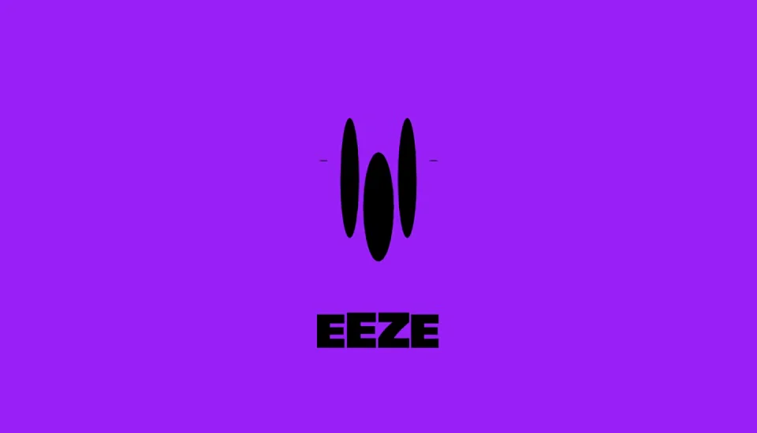
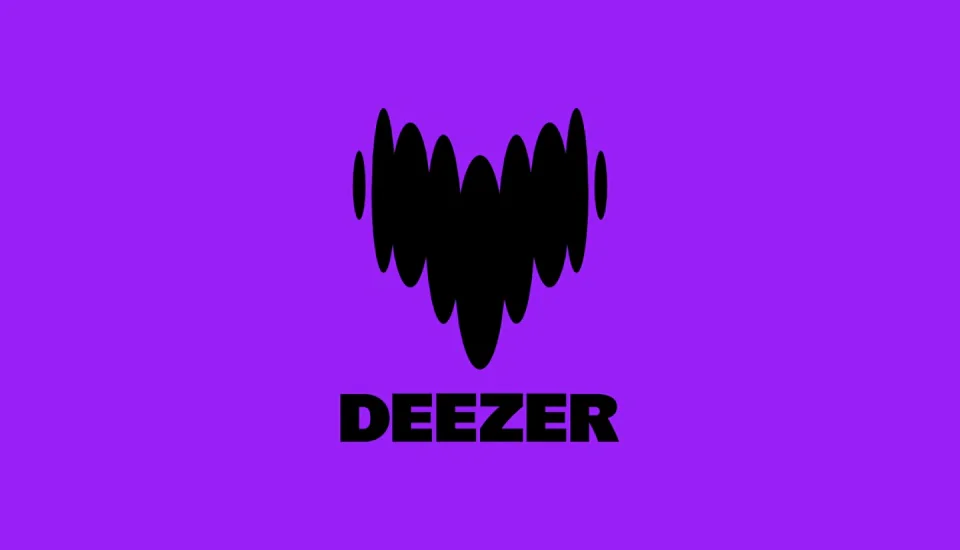
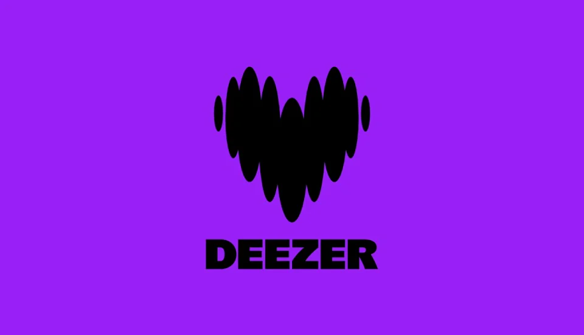

Deezer / V396
Deezer｜声波心形标志
让独立声波先各自动起来，再共同组成一个稳定的心形标记。
构图与编排 可播放 · 可替换内容
整体编排规则示例
查看 HTML 源码
<!doctype html><html lang="zh-CN"><meta charset="utf-8"><meta name="viewport" content="width=device-width,initial-scale=1"><title>Deezer｜声波心形标志 · sequence</title><style>html,body{margin:0;width:100%;height:100%;overflow:hidden;background:#9419f6}canvas{display:block;width:100%;height:100%;object-fit:contain}</style><body data-mode="sequence"><canvas width="1000" height="600"></canvas><script src="data.js"></script><script src="common.js"></script><script src="scene.js"></script><script src="bridge.js"></script></body></html>画面元素紫色背景九个声波椭圆心形轮廓底部字标
MOTION LANGUAGE
动作与构图
局部动作 · 构图规则
01
声波共同形成轮廓
声波共同形成轮廓规则示例
查看 HTML 源码
<!doctype html><html lang="zh-CN"><meta charset="utf-8"><meta name="viewport" content="width=device-width,initial-scale=1"><title>Deezer｜声波心形标志 · sequence</title><style>html,body{margin:0;width:100%;height:100%;overflow:hidden;background:#9419f6}canvas{display:block;width:100%;height:100%;object-fit:contain}</style><body data-mode="clip" data-start="0" data-end="1.1"><canvas width="1000" height="600"></canvas><script src="data.js"></script><script src="common.js"></script><script src="scene.js"></script><script src="bridge.js"></script></body></html>紫色底只承载黑色图形和单行字标。中部与两侧椭圆使用不同长度，保持双峰与下端收尖。
先展开几个声波，再补齐整体轮廓，字标从下方稳定出现。
02
留读后按声波拆开
留读后按声波拆开规则示例
查看 HTML 源码
<!doctype html><html lang="zh-CN"><meta charset="utf-8"><meta name="viewport" content="width=device-width,initial-scale=1"><title>Deezer｜声波心形标志 · sequence</title><style>html,body{margin:0;width:100%;height:100%;overflow:hidden;background:#9419f6}canvas{display:block;width:100%;height:100%;object-fit:contain}</style><body data-mode="clip" data-start="4" data-end="5.3"><canvas width="1000" height="600"></canvas><script src="data.js"></script><script src="common.js"></script><script src="scene.js"></script><script src="bridge.js"></script></body></html>主体完成后保持位置，退场逐条缩短和分离，最后回到纯底色。
03
替换品牌而保留形态
更换背景、字标或声波颜色；保持心形轮廓、独立条带和下方稳定文字三者的关系。
SEQUENCE
段落与节奏
点击段落，定位到上方编排示意。




画面参考 · 离散静帧
KEEP THE RELATIONSHIPS
制作其他主题
- 可替换字标和底色；保留分条声波共同组成心形的特征。
- 字标保持单行，宽度略小于图形整体宽度；文字不随每个声波一起抖动。
制作约束
紫色背景 / 九个声波椭圆 / 心形轮廓 / 底部字标
- 各椭圆保持独立，纵向尺寸错峰增长后共同形成心形；不要直接缩放一个完整心形。
- 字标稳定在心形下方，主图形完成后留读；退场先拆开声波，再收回小点。